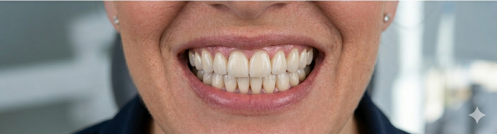
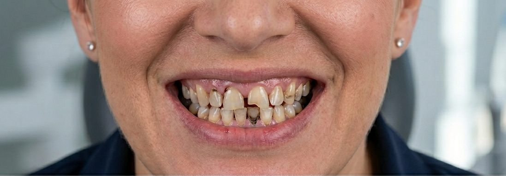
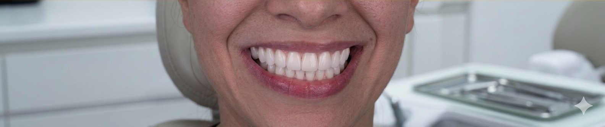
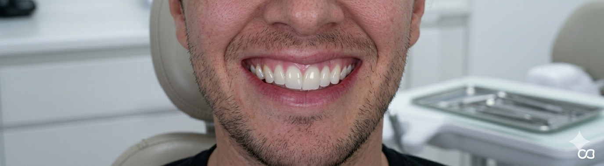
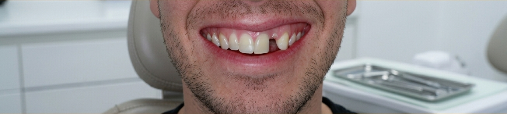
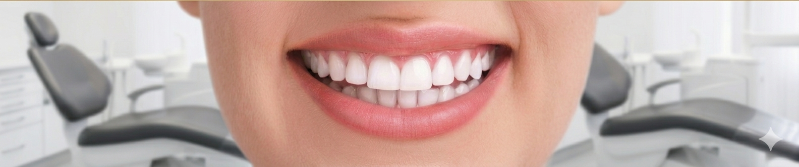
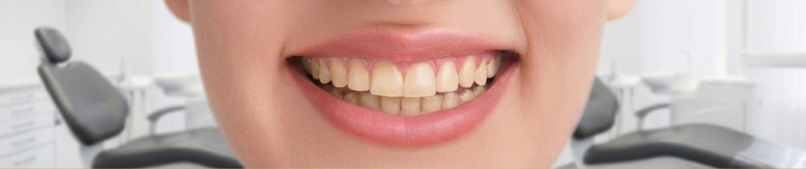
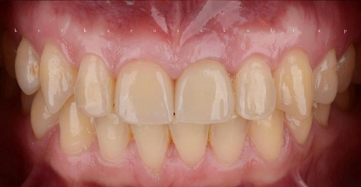
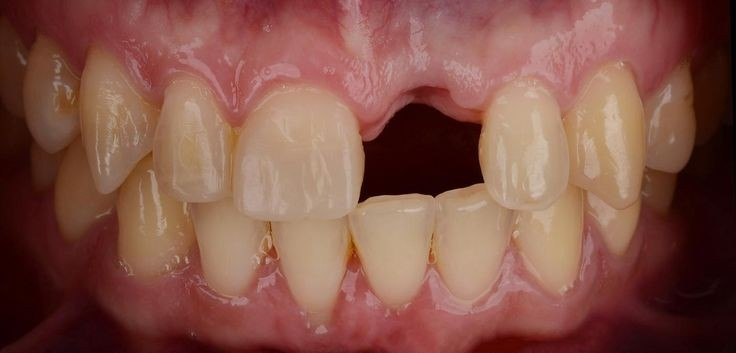

Antes DespuésRehabilitación oral completa
Restauración funcional y estética de toda la dentición mediante coronas y carillas.
Consultar tratamientoRehabilitación oral — Estética dental


Antes DespuésRestauración funcional y estética de toda la dentición mediante coronas y carillas.
Consultar tratamiento
Antes DespuésTransformación estética mediante carillas de porcelana para una sonrisa natural y armoniosa.
Consultar tratamiento

Antes Después

Antes DespuésAclaramiento profesional para recuperar la luminosidad natural de los dientes.
Consultar tratamiento

Antes DespuésSoluciones removibles y fijas para recuperar la funcionalidad y estética completa.
Consultar tratamiento